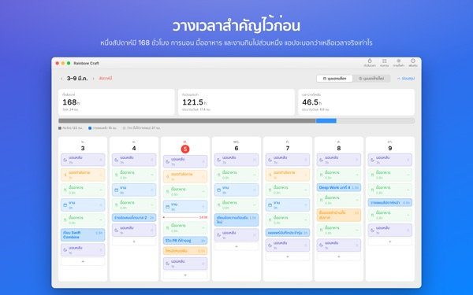
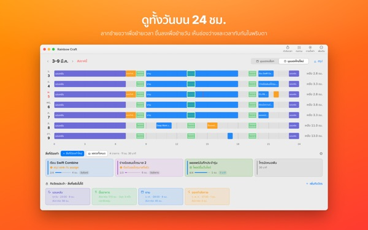
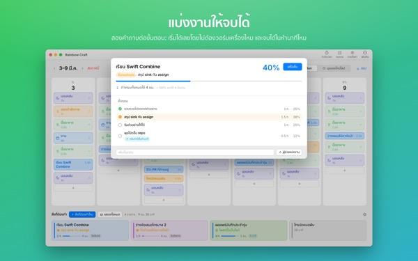
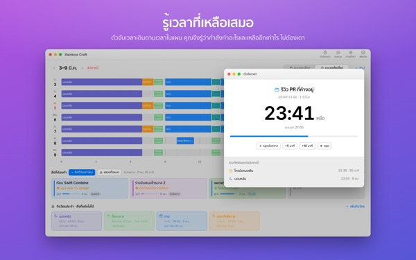
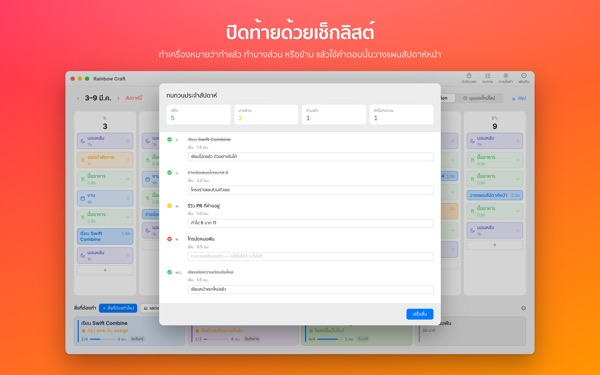

สัปดาห์นี้
ใส่ได้หมดจริงหรือ
Rainbow Craft กางสัปดาห์ของคุณบน Mac ออกเป็นรายวันและรายชั่วโมง เริ่มจากเวลาที่ตัดไม่ได้ อย่างการนอน มื้ออาหาร และงาน แล้วลากสิ่งที่ต้องทำไปไว้ในช่องว่างที่เหลือ ดูให้เห็นกับตาว่าอะไรใส่ได้จริง
วางแผน กิจวัตร สิ่งที่ต้องทำ ทบทวน ตัวจับเวลา และนำเข้าปฏิทิน ใช้ได้ฟรี

ลองวางแผนหนึ่งสัปดาห์ตรงนี้
เราวางกิจวัตรสี่อย่างที่แอปแนะนำตอนเปิดครั้งแรกไว้ให้แล้ว ลองเปิดปิดกิจวัตร แล้ววางสิ่งที่ต้องทำลงในแต่ละวัน
รายการยาวขึ้นเรื่อยๆ แต่สัปดาห์ไม่ยาวตาม
รายการสิ่งที่ต้องทำไม่ได้บอกว่าสัปดาห์นี้รับไหวหรือเปล่า พอหักเวลานอน กินข้าว และเดินทางออกไปแล้ว เวลาที่เหลือมักน้อยกว่าที่คิด Rainbow Craft แสดงชั่วโมงเหล่านั้นเป็นตัวเลขและช่อง แล้วให้คุณลองวางแต่ละงานลงในที่จริง
ดูหนึ่งวันบนไม้บรรทัด 24 ชั่วโมง
มุมมองไทม์ไลน์กางหนึ่งวันลงบนไม้บรรทัด 24 ชั่วโมง ช่องว่างและส่วนที่ทับกันเห็นได้ทันที และคุณเลือกเองว่าจะจัดสิ่งที่ซ้อนกันอย่างไร
ดึงการประชุมและนัดหมายจากปฏิทินบน Mac มาได้โดยไม่ต้องพิมพ์ซ้ำ ถ้าต้องการ แผนของคุณยังเขียนลงปฏิทิน Rainbow Craft ที่แยกไว้ต่างหากและเห็นได้บน iPhone ปฏิทินอื่นจะไม่ถูกแก้ไขเลย

แบ่งงานใหญ่เป็นขั้นที่ทำจบได้
งานใหญ่มักชะงักเพราะยังมีบางอย่างขวางอยู่ แอปจะถามสองข้อในทุกขั้น คือเริ่มได้เลยโดยไม่ต้องเตรียมตัวไหม และทำเสร็จได้ในห้านาทีไหม
ขั้นที่ผ่านทั้งสองข้อคือชิ้นเล็กที่หยิบมาทำได้ทุกครั้งที่ว่างห้านาที ส่วนที่เหลือต้องกันเวลาไว้ ถ้าแอปตัดสินผิด คุณเปลี่ยนได้เอง

กำลังทำอะไร และเหลืออีกนานแค่ไหน
เมื่อถึงเวลาเริ่ม แผนจะเปลี่ยนเป็นกำลังทำ และเมื่อหมดเวลา แอปจะถามว่าทำเสร็จหรือยัง ตัวจับเวลาเดินตามตารางของคุณ
วิดเจ็ตตัวจับเวลาตอนนี้แสดงงานที่กำลังทำและเวลาที่เหลือ โดยไม่ต้องเปิดแอป

ปิดสัปดาห์ด้วยเช็กลิสต์
การทบทวนประจำสัปดาห์คือการ์ดวันละหนึ่งใบ ติ๊กว่าทำแล้ว ทำไปครึ่งหนึ่ง หรือข้ามไป แล้วใช้คำตอบนั้นวางแผนสัปดาห์ถัดไป
ถ้าใช้บัญชี iCloud เดียวกัน สิ่งที่ต้องทำจะเดินทางระหว่างแอปนี้กับ Rainbow of Desire บน iPhone แผนวันนี้ที่จัดบน Mac จึงติดตัวคุณไปข้างนอกด้วย

เริ่มได้ในสามขั้นตอน
- 1
วางเวลาที่ตัดไม่ได้
สิ่งที่กลับมาทุกสัปดาห์ อย่างการนอน มื้ออาหาร และงาน ให้ตั้งเป็นกิจวัตร แอปจะไม่ใส่อะไรให้เองล่วงหน้า
- 2
เขียนสิ่งที่ต้องทำ
เขียนบรรทัดละหนึ่งงานในส่วนสิ่งที่ต้องทำด้านล่าง ยังไม่ต้องตัดสินใจว่าจะทำเมื่อไร
- 3
ลากไปวางในวัน
วางลงในวันไหนก็กลายเป็นแผนของวันนั้น ถ้าวันเลื่อน ก็ลากไปวันอื่นหรือกลับไปที่รายการ
ลองคำนวณด้วยกิจวัตรที่แนะนำ
- หนึ่งสัปดาห์
- 168 ชั่วโมง
- นอนหลับ · วันละ 8 ชั่วโมง
- 56 ชั่วโมง
- มื้ออาหาร · วันละสามมื้อ
- 17.5 ชั่วโมง
- งาน · การเรียน · วันธรรมดา 9 ชั่วโมง
- 45 ชั่วโมง
- ออกกำลังกาย · จ. พ. ศ. 1 ชั่วโมง
- 3 ชั่วโมง
- เวลาที่ใช้ได้จริงในสัปดาห์นี้
- 46.5 ชั่วโมง
นี่เป็นเพียงตัวอย่าง เลือกและปรับกิจวัตรให้เข้ากับชีวิตของคุณ วันที่ลาพักหรือไปต่างจังหวัด ก็แค่เอางานออกเฉพาะวันนั้น
ทุกอย่างที่ต้องใช้ในสัปดาห์นี้ ใช้ฟรี
ฟรี
- แผนรายสัปดาห์และรายวัน กิจวัตร และสิ่งที่ต้องทำ ไม่จำกัดจำนวน
- มุมมองไทม์ไลน์และการแบ่งขั้น
- ทบทวนประจำสัปดาห์ และคัดลอกเป็นข้อความได้
- ตัวจับเวลาและวิดเจ็ตตัวจับเวลาตอนนี้
- นำเข้าจากปฏิทิน
- ซิงค์กับ Rainbow of Desire บน iPhone
- แนวโน้มย้อนหลัง 2 สัปดาห์
Plus · Pro
- Plus: แนวโน้ม 8 สัปดาห์ วันและช่วงเวลาที่คุณทำได้ดีที่สุด
- Plus: แผนเทียบกับเวลาจริง
- Plus: นำแผนของสัปดาห์ที่ราบรื่นมาวางในสัปดาห์นี้ได้ในครั้งเดียว
- Pro: ทุกอย่างของ Plus และแชร์ตารางผ่านลิงก์แบบดูอย่างเดียว
- Pro: ซื้อครั้งเดียว แอปบน iPhone ก็เป็น Pro ด้วย
แต่ละระดับเลือกได้ทั้งสมัครรายปีหรือซื้อครั้งเดียวใช้ได้ตลอด
ดูราคาได้ในแอปและบน App Store การสมัครรายปีจะต่ออายุอัตโนมัติ เว้นแต่ยกเลิกอย่างน้อย 24 ชั่วโมงก่อนสิ้นสุดรอบ Pro ที่ซื้อบน iPhone ใช้ได้บน Mac ที่ใช้บัญชี iCloud เดียวกันด้วย
คำถามที่พบบ่อย
ต้องลงชื่อเข้า iCloud ไหม
ไม่ต้อง ถ้าใช้บน Mac อย่างเดียว ต้องใช้ iCloud เมื่อจะซิงค์กับ iPhone และแชร์ตาราง
แอปจะแก้ไขปฏิทินของฉันไหม
ไม่แก้ปฏิทินที่มีอยู่เดิมเลย การนำเข้าแค่อ่านปฏิทินที่คุณเลือก ถ้าเปิดการเขียนแผนลงปฏิทิน Rainbow Craft แอปจะสร้างปฏิทินนั้นแยกไว้และเขียนลงที่นั่นเท่านั้น ลบปฏิทินนั้นได้ทุกเมื่อในแอปปฏิทิน
งานที่เขียนบน Mac ไม่ขึ้นบน iPhone
ตรวจดูว่าทั้งสองเครื่องใช้บัญชี iCloud เดียวกัน และติดตั้ง Rainbow of Desire บน iPhone แล้ว การซิงค์ผ่าน iCloud จึงอาจใช้เวลาสักครู่
ปิดหน้าต่างแล้วแอปจะปิดไปด้วยไหม
ไม่ แอปยังทำงานอยู่ เปิดหน้าต่างใหม่ได้จากเมนูหน้าต่าง หรือคลิกไอคอนใน Dock
อัปเดตแล้วงานและแผนที่เขียนไว้จะเป็นอย่างไร
ยังอยู่ครบเหมือนเดิม การอัปเดตไม่แก้ไขหรือลบสิ่งที่คุณเขียนไว้
อยากเปลี่ยนภาษาของแอป
เลือกได้ที่ด้านบนสุดของการตั้งค่า ในส่วน Language · 언어 · 語言 แล้วแอปจะเปิดใหม่ในภาษานั้น มีให้เลือก 23 ภาษา ชื่อกิจวัตรและงานที่คุณพิมพ์เองจะไม่ถูกแปล
เปลี่ยน Mac แล้ว Plus หรือ Pro หายไป
ลงชื่อเข้าด้วยบัญชี Apple เดิม แล้วคลิกกู้คืนการซื้อในการตั้งค่า ถ้าจะยกเลิก ให้ไปที่การตั้งค่าบัญชีใน App Store
สิ่งที่ฉันเขียนเก็บไว้ที่ไหน
ไม่มีบัญชี ไม่ต้องสมัคร และไม่มีเซิร์ฟเวอร์ของผู้พัฒนาที่เก็บแผนของคุณ สิ่งที่เขียนอยู่ในเครื่องและใน iCloud ของคุณเท่านั้น แอปส่งสถิติการใช้งานแบบไม่ระบุตัวตนที่ไม่มีเนื้อหาที่คุณเขียน และปิดได้ในการตั้งค่าที่ ส่งสถิติการใช้งานแบบไม่ระบุตัวตน
ติดขัดหรือเจออะไรแปลกๆ เขียนถึงเราได้ที่ mizzking75@gmail.com ในการตั้งค่าของแอปก็มีช่องทางติดต่อเช่นกัน